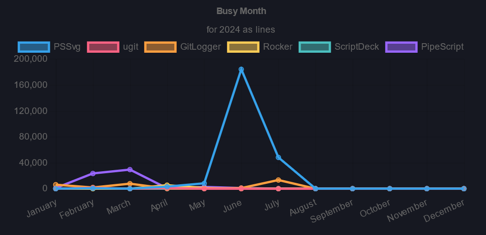
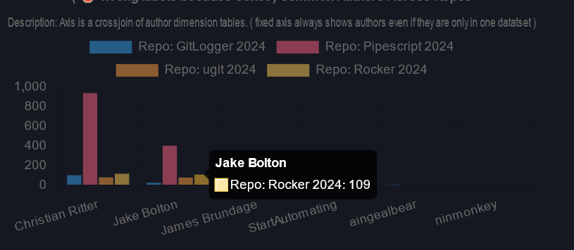

Watch Your Git
GitLogger is a simple service that helps you understand your codebase — one commit at a time.
Get Started — $1 / repo / month
Know Your Busiest Days
See commit volume across all your repos at a glance. GitLogger surfaces your team's most active periods so you can plan sprints, spot burnout early, and celebrate momentum when it matters.
Understand the rhythm of your codebase — by week, by month, by repo.

See Every Contributor's Impact
Compare commit activity across repos and authors in a single view. GitLogger helps you understand who is driving progress, where effort is concentrated, and how your team stacks up across projects.
Know your repos inside and out — and the people behind every push.
What GitLogger Measures
Every metric is computed per contributor and per repo, so comparisons are always apples-to-apples.
- Attach Rate Percentage of commit messages that reference an issue number or pull request.
- Busy Day of Week Total lines changed broken down by day of week.
- Busy Month Total lines changed broken down by calendar month.
- Churn Average number of files touched per commit, per contributor.
- Commit Cadence Total commits per contributor divided by their active timeframe.
- Commit Count Raw number of commits by each contributor.
- Commit Message Prefix Breakdown of conventional-style prefixes used in commit messages.
- Commit Repeats Total repeated commit messages per user — a signal for copy-paste habits.
- Commits by Language Percentage of commits referencing specific programming languages.
- Issue Breadth Distinct number of issues mentioned in commits by user.
- Line Cadence Total lines changed per user divided by the time between commits.
- Lines Changed Total insertions and deletions attributed to each user.
- Net Line Cadence Net lines (insertions minus deletions) per user divided by time between commits.
- Net Lines Changed Total insertions minus total deletions per user — who is growing the codebase?
- Repo Summary Date range, distinct contributor count, and key activity stats rolled into one view.
Simple, Honest Pricing
$1 / repo / month
Connect as many repos as you need. Cancel any time. No per-seat fees, no surprise bills — just clear metrics for every repository you care about.
Start Watching Your Git